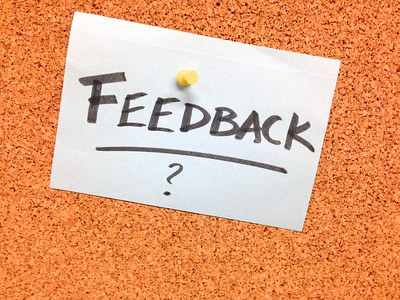

We have reached the point in the term when we have only a week and a half left before reading day and the start of exams. I want to provide details on the final exam and course policies that are relevant as we reach the end of the term.
All work with open deadlines is due by 11:59 PM on Friday, December 2. At that point, all work in Canvas will close. You will not be able to submit any additional work nor to revise and resubmit any work.
No course activities can be due during the last three days of classes, by policy in the Virginia Tech Faculty Handbook, 9.6.1.
Be sure to submit all your work by 11:59 PM on Friday, December 2, 2022.
Deadline
The final exam has a firm deadline and no grace period. There are no make-ups or extensions unless approved by the Dean of Students. Regardless, you should have plenty of time to take your final.
When to Take Your Exam
Any time that you want to during exam week. You have all six days, from 12:00 AM on Friday, December 9 to 11:59 PM on Wednesday, December 14. Your final exam must be submitted by the due date so that I can submit grades on time.
I respond to the work you submit in the order that it is received. I will mark your work Complete in Canvas as quickly as I can. During the last days of the course, many people are working to turn work in by December 2 (the last day to submit work for the course).
Because of the volume of work, I may need more time to respond and I will rely strongly on rubrics rather than extensive comments.
I will do my best to return all work by the last day of the course, December 7.
If you have an issue that affects your ability to complete the course, you may qualify for Academic Relief. Contact the relevant department for more information and to apply:
My department’s policy states, "Incompletes are for students who did their work during the semester but could not complete course requirements because of a problem or emergency at the end of the term."
As a result, I cannot offer Incompletes for anyone who fails to keep up during the term. If you find you have an impossible amount of work to complete by the end of the term, withdrawing from the course is likely the best solution.
If you are not eligible for Academic Relief and have not completed the course or have not achieved the grade you set as your goal, consider withdrawing from the course. You have until the last day of classes (Wednesday, December 7) to apply. Note that your dean’s signature is required, so do not wait until the last minute.
What is the difference between withdrawing and resigning?
A student withdraws no later than the first day of the semester; no dean’s signature is required.
Beyond the first day, a student resigns, and a signature is required from their dean. The form for withdrawing and resigning is the same.
What is a course withdrawal?
Course Withdrawal (“W” grade) is a policy whereby you can withdraw from three courses (regardless of the number of credit hours) during your academic career at Virginia Tech. Course Withdrawal is not available until after the normal six-week drop deadline date for a semester. The deadline for using course withdrawal is the last day of classes prior to reading day, and you must meet with your advisor to initiate a course withdrawal. Courses for which you have applied a course withdrawal remain on your transcript with a “W” grade.